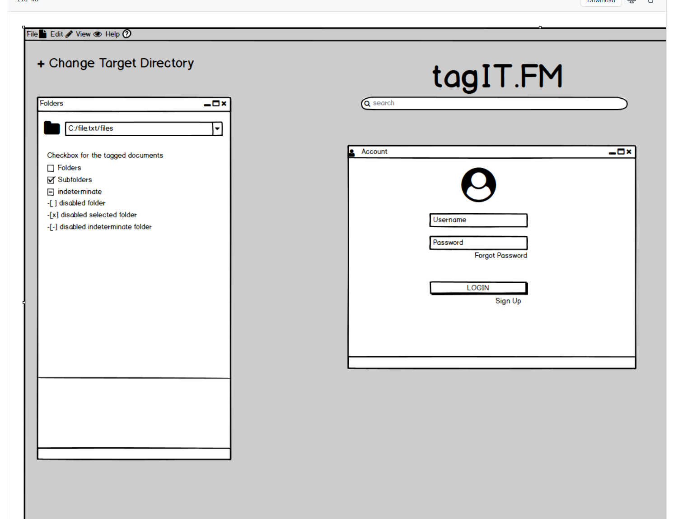

UI Project
This project i created was a design for a GUI interface that was required for a school project that i think looks like it is well designed from my perspective.
The GUI just lays out the applications use by marking where the user will complete the tasks associated by the programs design to complete the job neccessary to the business task.
